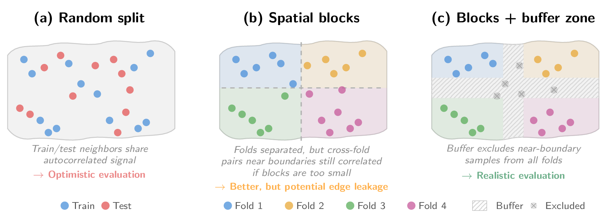

Constructing a machine-learning-ready dataset
Constructing an ML-ready dataset from EO imagery introduces challenges that have no direct analog in standard computer vision: spatial autocorrelation in the labels inflates apparent performance [1], [2] if not handled at the splitting stage, geographic bias in the sampling distorts what the model learns, and the choice of tiling and gridding scheme can silently introduce data leakage or duplication. We address these issues in turn, starting with the data formats that underpin the entire dataset design.
Data formats
The data format used to store an ML-ready dataset is a creation time decision that propagates through the entire pipeline. It defines how array payloads are physically laid out, how metadata are encoded, how chunks or tiles are addressed, and which codec is required to decode the data. These choices are not strictly irreversible, but changing them requires repacking, rechunking, or rewriting the dataset, and they should therefore be treated as part of the dataset design rather than as a late implementation detail. The most important consequence of a format choice is the efficiency of the access pattern. The optimal layout minimizes over-read, understood as the gap between bytes fetched from storage and bytes actually used by the model. In practice, this depends on how well the physical layout matches the logical access pattern of training, including the shape of the chunks, the band interleaving strategy, the compression block size, the placement of metadata, and the latency of the storage backend. Most formats used for ML on EO data can be understood through three broad storage patterns, summarized in Table 6.1.
Container formats with an internal index
The first pattern stores data inside binary containers, each with its own internal metadata and offset structures. HDF5 [3], netCDF-4 [4], GeoTIFF [5], and COG [6] belong to this family. HDF5 (Hierarchical Data Format 5) organizes data as hierarchical groups and arrays, with chunked storage the only layout supporting compression. NetCDF-4 [7] builds on HDF5 while imposing the NetCDF (Network Common Data Form) data model of named variables, dimensions, and attributes, and is usually paired with the Climate and Forecast conventions [8], which enables the comparison of datasets from different sources without ad hoc translation. GeoTIFF (georeferenced TIFF) extends TIFF (Tag Image File Format) with geospatial keys that tie raster coordinates to a coordinate reference system. Unlike HDF5 and netCDF-4, it is fundamentally a two-dimensional raster format, so spectral bands are carried as samples per pixel or as separate images, rather than as axes of an N-dimensional array. COG is a profile of GeoTIFF that constrains this layout for efficient partial reads over HTTP. Two properties govern performance across the family. The first is the order in which array values are serialized, called the interleave (or chunk shape), which fixes which neighbors end up physically adjacent in the file and therefore which reads are cheap. The second is the cost of opening the file. The internal index of offsets and byte lengths must be fetched before any data can be addressed, but once that index sits in memory, reads to individual chunks are independent and parallel by design.
Key-value chunk stores
The second pattern stores arrays as independently addressable chunks in a key-value store, of which Zarr [9] is the canonical example. Each encoded chunk sits under a key in an abstract store, which may be a directory on a filesystem or any backend exposing equivalent read and write operations. This removes the need to open a single monolithic container before locating chunk data, since the storage keys themselves provide the addressing mechanism, which aligns naturally with distributed readers and parallel workloads. The trade-off is that a naive Zarr layout can create very large numbers of small files or objects, which stresses POSIX metadata operations and filesystem inode limits, or inflates object storage request overhead. The Zarr v3 sharding extension (ZEP 2) addresses this by packing multiple logical chunks into a larger physical storage object while preserving chunk level access. Zarr defines array storage, chunking, codecs, and metadata containers, but not the geospatial meaning of coordinates, CRS, or affine transforms, which GeoZarr and related conventions are emerging to supply.
Chunk size is a property of the workload as much as of the format. In one cloud-scale Xarray/Dask analysis of a 250 TB Zarr archive, increasing chunks from about 200 MiB to about 840 MiB shrank the task graph from 1.3 million to about 320,000 tasks and eliminated memory spilling on the workers [10].
Columnar tables
The third pattern stores samples as rows rather than arrays as chunks. Not every model consumes patches: for pixel-based algorithms, a table is the natural container. GeoParquet stores samples as rows, features and labels as columns, and the row group rather than the chunk as the unit of access; the geometry column keeps each sample georeferenced. Reading a subset of columns does not require touching the others, which suits feature tables that are wide but sparsely used.
| Format | Storage model | Typical payload | Random access mechanism | Geospatial metadata |
|---|---|---|---|---|
| HDF5 | Single binary container with groups, datasets, metadata, and internal chunk indices | Heterogeneous N-dimensional scientific arrays | Contiguous or compact offsets, or chunk index; performance depends on chunk shape | Optional; requires domain-specific conventions |
| netCDF-4 | netCDF data model on an HDF5 backend | N-dimensional variables with named dimensions, attributes, and groups | HDF5 chunking through the netCDF API | Usually via CF conventions |
| GeoTIFF | TIFF image container extended with GeoTIFF tags and keys | Georeferenced raster imagery, usually 2-D with bands | Strips or tiles; efficient spatial access requires tiling | Built-in through GeoTIFF tags and keys |
| COG | Tiled GeoTIFF with all metadata first and internal overviews | Cloud-distributed geospatial rasters and image scenes | Tile offsets and HTTP range requests; overviews avoid full-resolution reads | Built-in through GeoTIFF tags and keys |
| Zarr | Key–value hierarchy of metadata documents and encoded chunks | Chunked N-dimensional arrays for cloud or distributed processing | Chunk keys computed from grid indices; v3 sharding groups chunks into larger objects | Usually CF conventions via xarray; GeoZarr emerging |
| (Geo)Parquet | Columnar table of row groups with per-column statistics | Tabular samples: one row per pixel or object, features and labels as columns | Row-group offsets with column selection; no spatial chunking | Geometry column and CRS via the GeoParquet specification |
Dataset splits
When evaluating the performance of an ML model, we want to avoid over-confident results. A conventional uniformly at random assignment of data samples to training and test sets can bias the evaluation if labels are spatially auto-correlated and clustered [11]. A widely spread approach to tackle spatial autocorrelation is to perform block cross-validation, which Roberts et al. [12] recommend using “wherever dependence structures exist in a dataset, even if no correlation structure is visible in the fitted model residuals, or if the fitted models account for such correlations”. Spatial \(K\)-fold block cross-validation first divides the area into non-overlapping spatial blocks of a certain size, before assigning each block to one of \(K\) folds. Model training and evaluation are then performed using the leave-one-fold-out method, where samples from a single fold are set aside for model evaluation, while samples from the remaining \(K-1\) folds are used for model training, and the process is repeated for each fold, as in [13], [14]. Alternatively, one fold can be assigned for model evaluation, one fold for validation, and the \(K-2\) others for training, as in [15]. Results are then reported across the concatenated test folds. In order to avoid cross-fold contamination, a good practice consists in enforcing spatial buffers between blocks, as in [15]. Buffers and block size address the same underlying issue and are partially substitutable: sufficiently large blocks reduce edge leakage to negligible levels without explicit buffers [12], while buffers are most useful when block size is constrained by study extent or sample distribution. We illustrate those different approaches in Figure 6.1. While spatial block cross-validation provides a reliable assessment of model generalizability, most works perform a more limited spatial block validation equivalent to setting \(K=1\), in which blocks are partitioned once and randomly assigned to train, validation, and test sets [16], [17], [18], [19]. The definition of a block varies across works. Some impose a regular grid (Mosig et al. [13] grid the Earth into non-overlapping blocks of 50 km in an equal area projection) while others adopt the geographical unit at which the data is delivered, such as Sentinel-2 tiles [20] or Planet quads [17], [21]. Lusk et al. [14] take a more principled approach, determining the spatial autocorrelation via semivariograms at a \(1\text{km}^2\) resolution and defining hexagonal blocks accordingly. The appropriate block size depends on the spatial scale of residual autocorrelation: blocks should be substantially larger than the distance at which model residuals become uncorrelated, since smaller blocks leave train and test samples near boundaries effectively dependent [12]. We elaborate on various gridding choices and their implications in the next section.

While we have focused on spatial blocking, the underlying principle generalizes to any source of dependence in the data: folds must be independent along whatever structure the model is expected to extrapolate across. Extensions include phylogenetic blocking for taxonomic relatedness [22], temporal blocking for serial autocorrelation [23], and blocking in environmental or feature space, which tests generalization to novel conditions rather than novel locations [24]. The appropriate choice depends on what form of generalization the evaluation is meant to characterize.
Furthermore, in the case of geographically distributed labeled data, it might be of interest to evaluate the performance of the model for different regions, by defining individual splits for each region, as in [18]. This also enables the assessment of a model’s geographical generalization abilities in a comprehensive manner: any region can be held out from the training set and be evaluated on, as in [25].
Spatial gridding
A map-making pipeline involves not one, but four different grids. The source grid is how the EO data archive is organized; it is inherited, and its seams and overlap are to be dealt with (see Optical data selection). The sampling grid indexes the dataset: it determines which locations become samples, how they are deduplicated, and where the boundaries between training and test data fall. The inference grid partitions the Earth for prediction, and the product grid determines how the finished map is stored and distributed; both are discussed in Map production and distribution. We hereby discuss the second. The three properties compared in Table 6.2 are the ones that matter for sampling: a grid is equal-area if every cell represents the same ground area; conformal if it preserves local angles and shapes, so that a square pixel corresponds to a square patch on the ground; and globally continuous if it covers the Earth without seams or inter-zone overlaps. We group candidate grids into four families, which we now describe.
| Grid | Equal-area | Conformal | Globally continuous |
|---|---|---|---|
| Geographic | |||
| Plate carrée | × | × | ✓ |
| Projection-based | |||
| Web Mercator | × | ✓ | ✓\(^a\) |
| UTM / MGRS | ×, ✓📍 | ×, ✓📍 | × |
| Equi7 Grid | \(\approx\) | × | ×\(^b\) |
| Equal Earth grid | ✓ | × | ×\(^c\) |
| DGGS | |||
| S2 Geometry | \(\approx\) | × | ✓ |
| H3 | \(\approx\) | × | ✓ |
| HEALPix | ✓ | × | ✓ |
| Indexing | |||
| Major TOM | \(\approx^d\) | n/a\(^e\) | ✓ |
Geographic grids
Geographic grids partition the Earth by lines of constant latitude and longitude, indexing cells in angular rather than metric units. The simplest instance is plate carrée: cells of fixed angular extent that are trivial to index but whose ground area scales with the cosine of the latitude. A \(1^\circ \times 1^\circ\) cell covers approximately 12,300 km\(^2\) at the equator and about 2000 km\(^2\) at \(80^\circ\) latitude, such that uniform sampling on this grid systematically oversamples high latitudes.
Projection-based tilings
Projection-based tilings lay a regular metric Cartesian grid over a planar coordinate system produced by a general-purpose cartographic projection. The grid’s geometric properties (conformality, area preservation, global continuity) are inherited from the projection. Web Mercator (EPSG:3857) is the industry standard of \(256\times256\) pixel tiles used by web mapping platforms. It is conformal but not equal-area, with ground resolution varying by roughly a factor of six between the equator and \(\pm80^\circ\) latitude. UTM partitions the globe into 60 UTM zones of \(6^\circ\) width, each with a conformal transverse Mercator projection. MGRS [26] subdivides each UTM zone by \(\approx8^\circ\) latitude bands into grid zones, each further divided into 100 km × 100 km squares. The Sentinel-2 tiling scheme, which inherits the UTM/MGRS framework, delivers products as 109.8 km × 109.8 km tiles, such that locations within the resulting ≈10 km border strips appear in two (or more) tiles [27]. The Equi7 Grid [28] uses seven continental sub-grids in Equidistant Azimuthal projections with a multi-level tiling structure (100 km \(\times\) 100 km at level T1), offering a principled alternative to MGRS. A single worldwide plane is simpler still: partitioning an equal-area projection such as Equal Earth (EPSG:8857) into regular cells gives exact equal-area stratification, at the cost of shape distortion toward the poles and a discontinuity at the antimeridian.
Discrete Global Grid Systems (DGGS)
Discrete Global Grid Systems are tessellations of the sphere designed to provide approximately or exactly equal-area cells with global continuity, avoiding the zone boundaries and overlaps of projection-based tilings. S2 Geometry [29] projects the sphere onto a cube and subdivides each face via a quadtree, yielding approximately equal-area quadrilateral cells (area ratio \(\leq 2\) at any level). H3 [30] tiles the sphere in nested hexagons with similar distortion bounds. HEALPix [31] achieves exact equal-area pixelation of the sphere on iso-latitude rings; its rHEALPix variant [32] unfolds the tessellation onto a planar rectangle.
Indexing grids
The three families above all define cells, committing to a geometry before any imagery is read. A fourth approach defines only an index and leaves the geometry to the source. Major TOM [33] defines a set of approximately equidistant sampling points on the WGS84 ellipsoid, adapting longitudinal spacing to latitude so that high latitudes are not oversampled, while prescribing neither projection nor cell extent; patches are extracted in the source product’s native CRS.
Data samples
With the data format, splitting strategy, and grid in place, the final step is to extract the actual samples used to train the model. We define a data sample as a \(W\times H\times T \times C\) patch, where \(W\) is the width, \(H\) is the height, \(T\) is the number of time steps, and \(C\) is the number of channels (dimensionality of the EO data at hand). This process involves three considerations: the choice of projection, the sampling strategy, and the optional alignment of the various data modalities.
Sampling strategy
ML researchers typically need to extract EO data samples corresponding to a set of labeled points (or polygons) distributed non-uniformly. In label-scarce regimes, the classic approach is to extract a sample per label, a sampling design that inherits the geographic bias the labels might have. An alternative approach is to sample a certain number of samples per grid cell, keeping all labels in sparsely populated cells and subsampling in densely populated ones, preventing dense regions from dominating. The area that each cell represents impacts the sampling: if the cells have area variation (like S2/H3) or are latitude-distorted (plate carrée), this sampling implicitly gives smaller cells more samples per unit area. For the cap to correspond to a true “labels per \(\text{km}^2\)” ceiling, one can use equal-area grids (HEALPix) or weight by cell area.
Projection choice
The projection in which training samples are processed is a separate decision from the projection in which the finished map is delivered, and the two need not agree. This paragraph concerns the first, and Map production and distribution the second. Most works keep the training data in the native CRS at which it is distributed [13], [19], [20], [34], [35], [36], [37], which for Sentinel-2 is UTM/WGS84. UTM is conformal and holds ground sampling distance near-constant within a zone, so a pixel represents approximately \(10\text{ m}\times 10\text{ m}\) on the ground everywhere within a zone [38] and a patch of fixed pixel dimensions covers a near-constant ground area. Others reproject to a single global CRS such as EPSG:3857 (Web Mercator) [21] or EPSG:4326 [18]. The cost is that the same patch then represents different ground areas at different latitudes, so a model with a fixed receptive field sees a different spatial scale depending on where its training sample came from. If a single global CRS is required, an equal-area projection (e.g., Equal Earth, EPSG:8857) holds that area constant, at the cost of shape distortion.
Multimodal alignment
When training patches combine data from multiple sensors (e.g., Sentinel-2 and ALOS-2 PALSAR-2), the inputs will generally differ in native projection, pixel spacing, and temporal sampling. The most common solution is to reproject and resample all modalities onto a shared grid and resolution before patch extraction, so that each training sample is aligned. This simplifies the data loader and model architecture but forces a choice of target resolution. The choice of resampling kernel also interacts with the downstream task: nearest-neighbor preserves categorical or integer-valued layers but introduces blocky patterns, whereas smooth kernels suit continuous fields but blur edges. An alternative is to preserve each modality at its native resolution and delegate alignment to the model architecture (see Model design and training), avoiding information loss at the cost of greater architectural complexity.
Taken together, these considerations argue for decoupling two concepts that are often conflated: the indexing strategy (how to select samples) and the patch projection (the coordinate system each sample lives in). Indexing should be done on a global grid that minimizes over-/under-sampling and overlap, independently of the patch projection and of how the EO data is tiled. Operations that rely on geography, such as train/test splitting, should be done on this grid. The patch projection, by contrast, only needs to minimize distortion at the scale of a single patch. UTM/WGS84, for instance, is a natural choice when the source archive is already UTM-native.